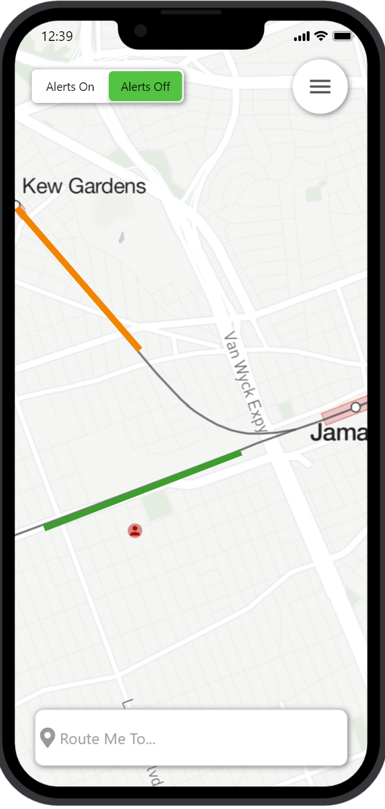

Problem Statement: Trains and Traffic

Everyone who lives in Columbia or any city with major train lines running through it knows the pain of waiting for a slow train and showing up to your destination 20 minutes late. The problem is not knowing the train schedules throughout Columbia and being late because of them. The problem is more specifically not knowing the optimal route to get to your destination while taking train delays into consideration.
Affinity Diagram: Trains

My group worked together to assess both the ideas and issues we may face in the creation of our Columbia train app.
Personna: 7 Personnas for Train Route App
A personna of a typical train route app user.
Storyboard: 7 storyboards for train app users
Storyboards for potential usages of the train app.
Sketches
Rough ideas of how the application may look.
Paper Prototype
A paper walkthrough of the potential look of every screen in the application.
High-fi Prototype: Train Tracker App
A walkthrough of the potential look of every screen in the application.